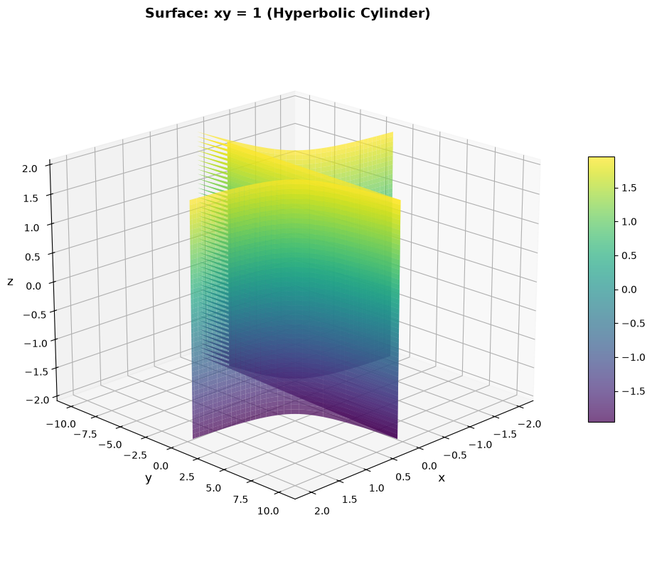
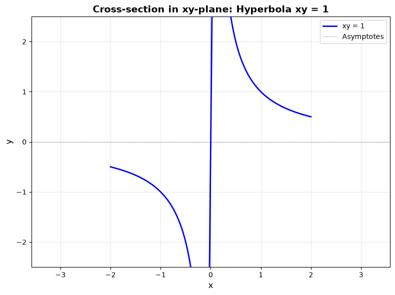
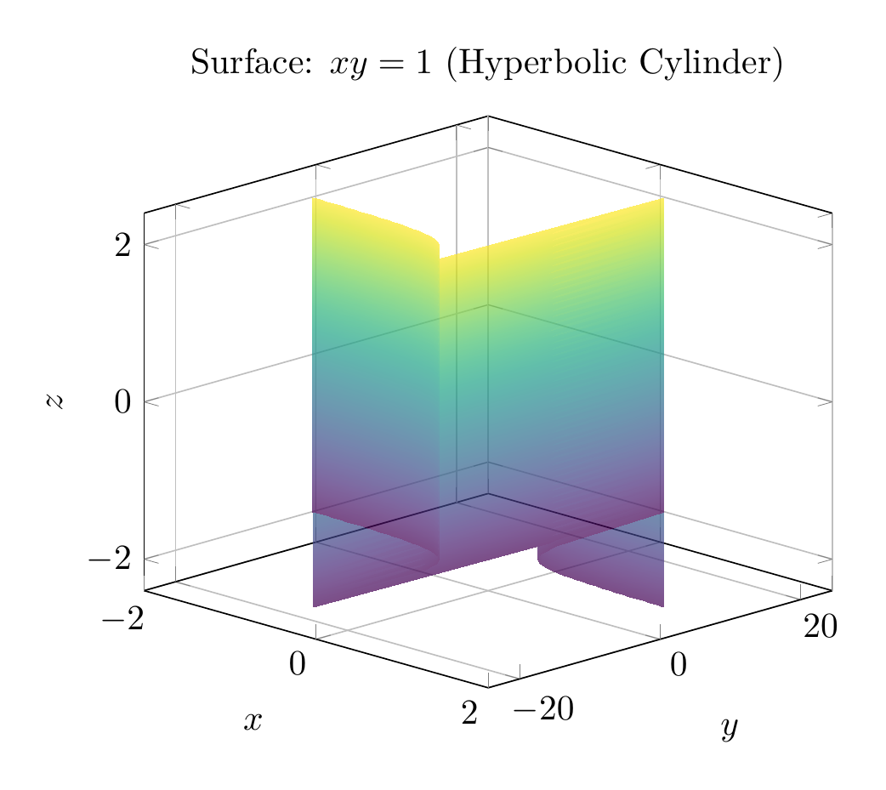
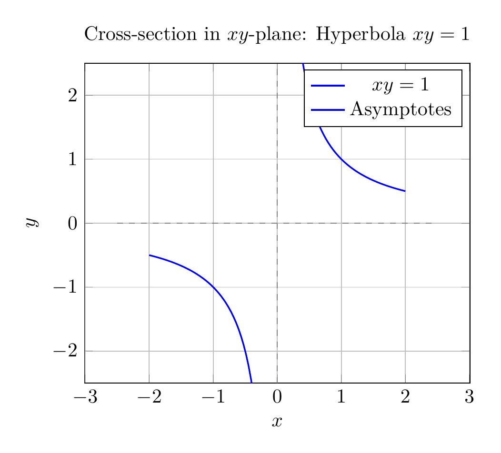

Path: mcma-Qwen3.5-397B-A17B/calculus-12.6.7/chat_20260823_213316_850539_utc_0800
Problem
Please solve the math problem in the image.

End of problem
Answer
# Solution: Describe and Sketch the Surface $xy = 1$
## Analysis
The equation $xy = 1$ describes a surface in three-dimensional space $\mathbb{R}^3$. Let's analyze this step by step.
### Step 1: Understanding the Equation
The equation $xy = 1$ can be rewritten as:
$$y = \frac{1}{x}$$
**Key observation:** The variable $z$ does not appear in the equation. This means that $z$ can take any real value while the relationship between $x$ and $y$ remains fixed.
### Step 2: Identifying the Surface Type
When an equation in $\mathbb{R}^3$ is missing one variable, the surface is a **cylinder**. Specifically:
- In the $xy$-plane (when $z = 0$), the equation $xy = 1$ represents a **hyperbola**
- Since $z$ is absent, this hyperbola is extended infinitely in both directions along the $z$-axis
- This creates a **hyperbolic cylinder**
### Step 3: Properties of the Surface
1. **Base curve:** The hyperbola $xy = 1$ in the $xy$-plane has:
- Two branches: one in the first quadrant ($x > 0, y > 0$) and one in the third quadrant ($x < 0, y < 0$)
- Asymptotes: $x = 0$ (the $y$-axis) and $y = 0$ (the $x$-axis)
- The hyperbola never touches either axis
2. **Cylinder structure:**
- The surface consists of two separate sheets (corresponding to the two branches of the hyperbola)
- Each sheet extends infinitely in the $\pm z$ direction
- The rulings (generating lines) of the cylinder are parallel to the $z$-axis
3. **Domain restrictions:**
- $x \neq 0$ (since division by zero is undefined)
- $y \neq 0$ (since $xy = 1 \neq 0$)
### Step 4: Classification
The surface $xy = 1$ is a **quadric surface** known as a **hyperbolic cylinder**. It is characterized by:
- Having a hyperbola as its cross-section in planes perpendicular to the $z$-axis
- Being translationally invariant along the $z$-axis
- Consisting of two disconnected components
## Summary
The surface $xy = 1$ is a **hyperbolic cylinder** with:
- **Base curve:** Hyperbola $xy = 1$ in the $xy$-plane
- **Axis:** Parallel to the $z$-axis
- **Structure:** Two separate sheets extending infinitely in the $\pm z$ direction
- **Asymptotic planes:** $x = 0$ and $y = 0$
$\\boxed{\text{Hyperbolic Cylinder}}$
---


\documentclass[border=10pt]{standalone}
\usepackage{pgfplots}
\usepgfplotslibrary{colormaps}
\pgfplotsset{compat=1.18}
\begin{document}
\begin{tikzpicture}
\begin{axis}[
xlabel={$x$},
ylabel={$y$},
zlabel={$z$},
title={Surface: $xy = 1$ (Hyperbolic Cylinder)},
view={45}{20},
colormap/viridis,
grid=major,
domain=-2:2,
y domain=-2:2,
samples=50,
unbounded coords=jump,
restrict z to domain=-2:2,
]
\addplot3[surf, opacity=0.7, shader=interp]
({x}, {1/x}, {y});
\end{axis}
\end{tikzpicture}
\end{document}

\documentclass[border=10pt]{standalone}
\usepackage{pgfplots}
\pgfplotsset{compat=1.18}
\begin{document}
\begin{tikzpicture}
\begin{axis}[
xlabel={$x$},
ylabel={$y$},
title={Cross-section in $xy$-plane: Hyperbola $xy = 1$},
axis equal,
grid=major,
domain=-2.5:2.5,
samples=100,
unbounded coords=jump,
xmin=-2.5, xmax=2.5,
ymin=-2.5, ymax=2.5,
]
\addplot[blue, thick, domain=-2:-0.1, samples=50] {1/x};
\addplot[blue, thick, domain=0.1:2, samples=50] {1/x};
\addplot[dashed, gray, thin] coordinates {(-2.5, 0) (2.5, 0)};
\addplot[dashed, gray, thin] coordinates {(0, -2.5) (0, 2.5)};
\legend{$xy = 1$, Asymptotes}
\end{axis}
\end{tikzpicture}
\end{document}

End of answer